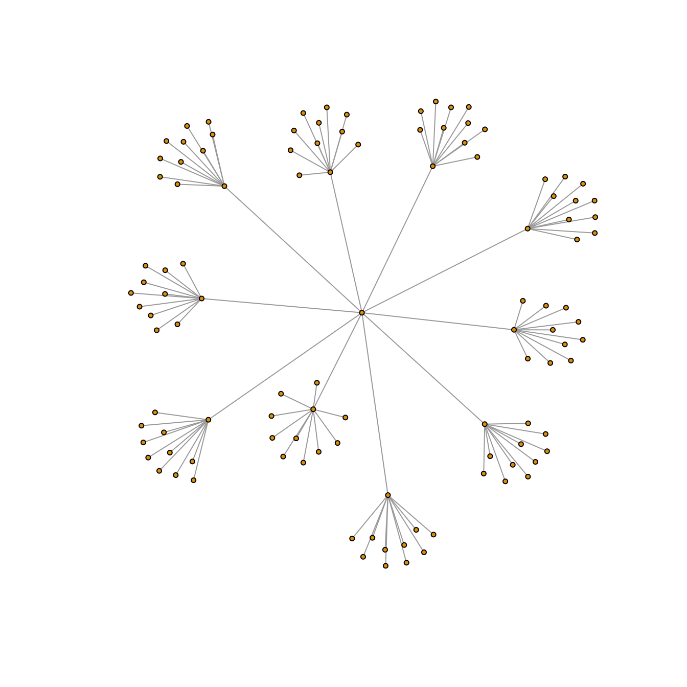
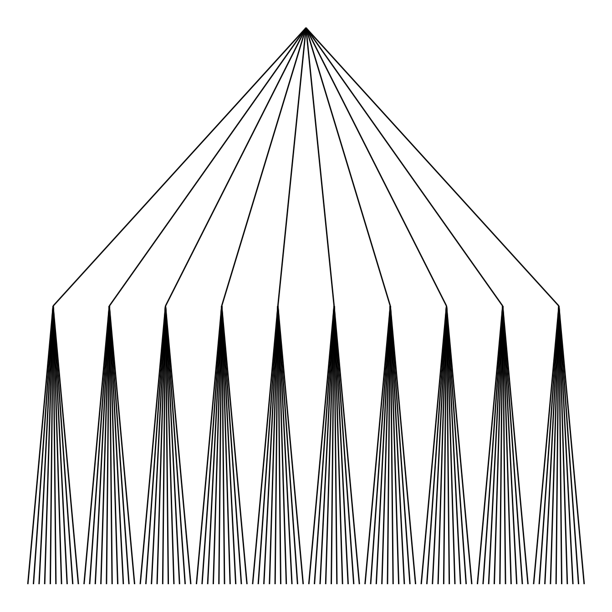
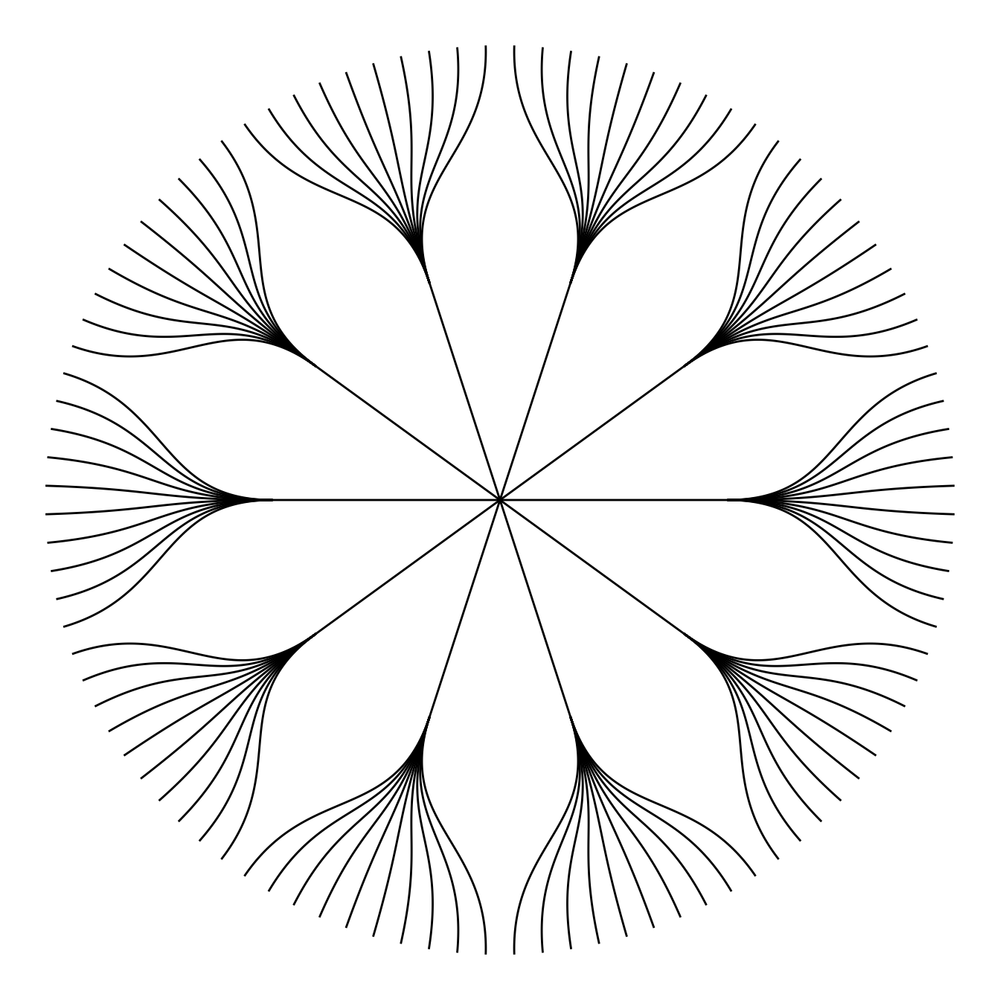
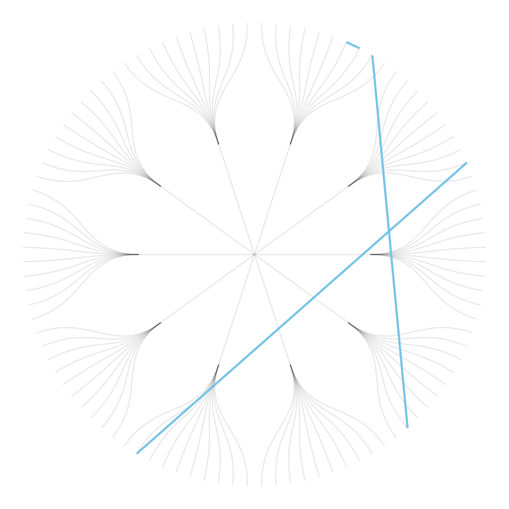
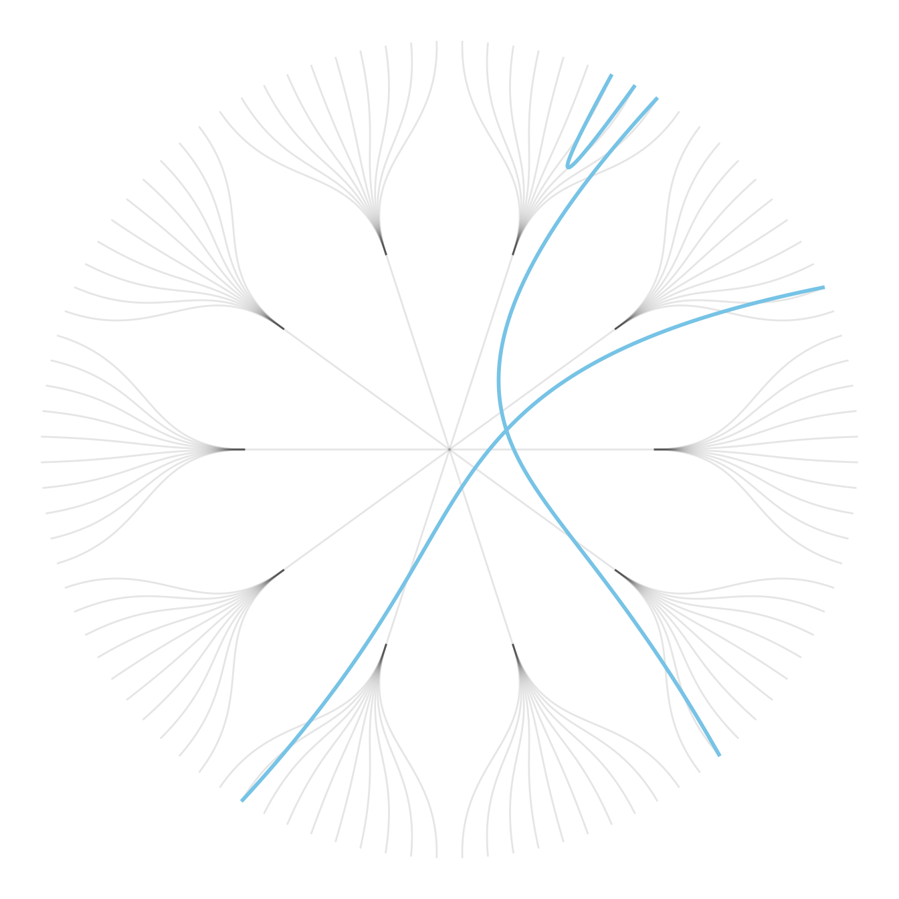
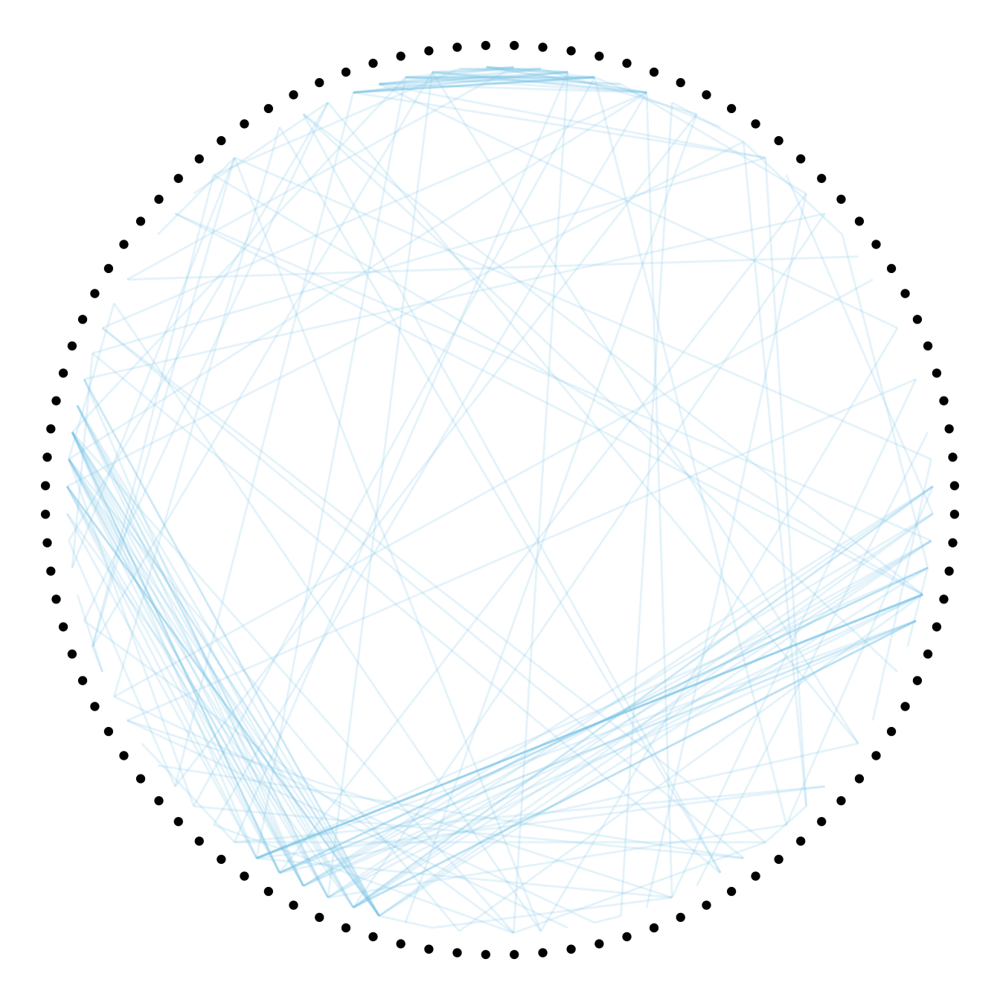
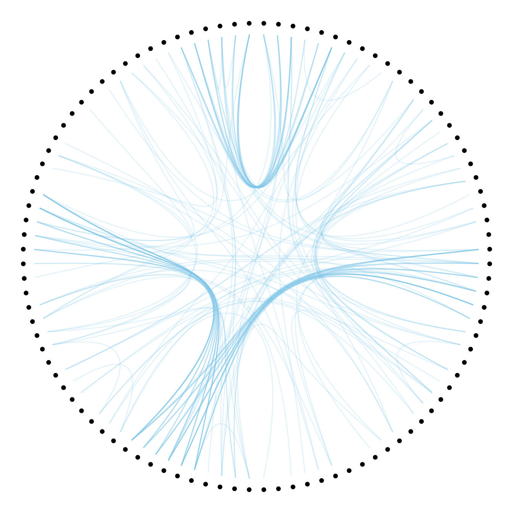

Input data
Hierarchical Edge Bundling is a data visualisation method allowing to check connections between leaves of a hierarchical network. It requires two inputs:
- A hierarchical network structure, also called tree
- An adjacency matrix that describes connections between some nodes of the tree
Hierarchical network data frame:

Connections data frame:

Visualizing the hierarchy
Let’s start by creating the hierarchic structure with R. A hierarchic structure is basically a set of nodes, with edges linking nodes. We often accompany it with a second data frame that gives features for each node of the first data frame.
Let’s build these 2 tables:
# Libraries
library(ggraph)
library(igraph)
# create a data frame giving the hierarchical structure of your individuals.
# Origin on top, then groups, then subgroups
d1 <- data.frame(from="origin", to=paste("group", seq(1,10), sep=""))
d2 <- data.frame(from=rep(d1$to, each=10), to=paste("subgroup", seq(1,100), sep="_"))
hierarchy <- rbind(d1, d2)
# create a vertices data.frame. One line per object of our hierarchy, giving features of nodes.
vertices <- data.frame(name = unique(c(as.character(hierarchy$from), as.character(hierarchy$to))) ) A hierarchical structure is a network structure. Thus, we can visualise it with the igraph or the ggraph library quite easily, like described in the network section of the gallery.
# Create a graph object with the igraph library
mygraph <- graph_from_data_frame( hierarchy, vertices=vertices )
# This is a network object, you visualize it as a network like shown in the network section!
# With igraph:
plot(mygraph, vertex.label="", edge.arrow.size=0, vertex.size=2)
# With ggraph:
ggraph(mygraph, layout = 'dendrogram', circular = FALSE) +
geom_edge_link() +
theme_void()
ggraph(mygraph, layout = 'dendrogram', circular = TRUE) +
geom_edge_diagonal() +
theme_void()
Add a few connections
Now, let’s add a second input to our data: connections. Suppose that nodes 18, 20 and 30 are connected to nodes 19, 50 and 70 respectively.
An obvious solution to represent this link could be to add a straight line (left). The hierarchical edge bundling method does almost that. But it curves the lines to make thelm follow the edges of our structure (right).
This method offers a tension parameters which controls how much we want to curve the lines.
# left: What happens if connections are represented with straight lines
ggraph(mygraph, layout = 'dendrogram', circular = TRUE) +
geom_edge_diagonal(alpha=0.1) +
geom_conn_bundle(data = get_con(from = c(18,20,30), to = c(19, 50, 70)), alpha=1, width=1, colour="skyblue", tension = 0) +
theme_void()
# right: using the bundle method (tension = 1)
ggraph(mygraph, layout = 'dendrogram', circular = TRUE) +
geom_edge_diagonal(alpha=0.1) +
geom_conn_bundle(data = get_con(from = c(18,20,30), to = c(19, 50, 70)), alpha=1, width=1, colour="skyblue", tension = 1) +
theme_void()
Hierarchical Edge Bundling
Usually connections are stored in another data frame, here called connect. We have to pass it to ggraph to automatically plot all the connections. You get a hierarchical edge bundling chart.
Note: ggraph expect nodes to be called following their id. Thus, it is necessary to get them using the match() function.
# create a dataframe with connection between leaves (individuals)
all_leaves <- paste("subgroup", seq(1,100), sep="_")
connect <- rbind(
data.frame( from=sample(all_leaves, 100, replace=T) , to=sample(all_leaves, 100, replace=T)),
data.frame( from=sample(head(all_leaves), 30, replace=T) , to=sample( tail(all_leaves), 30, replace=T)),
data.frame( from=sample(all_leaves[25:30], 30, replace=T) , to=sample( all_leaves[55:60], 30, replace=T)),
data.frame( from=sample(all_leaves[75:80], 30, replace=T) , to=sample( all_leaves[55:60], 30, replace=T))
)
# The connection object must refer to the ids of the leaves:
from <- match( connect$from, vertices$name)
to <- match( connect$to, vertices$name)
# plot
ggraph(mygraph, layout = 'dendrogram', circular = TRUE) +
geom_conn_bundle(data = get_con(from = from, to = to), alpha=0.2, colour="skyblue", tension = 0) +
geom_node_point(aes(filter = leaf, x = x*1.05, y=y*1.05)) +
theme_void()
# plot
ggraph(mygraph, layout = 'dendrogram', circular = TRUE) +
geom_conn_bundle(data = get_con(from = from, to = to), alpha=0.2, colour="skyblue", tension = 0.9) +
geom_node_point(aes(filter = leaf, x = x*1.05, y=y*1.05)) +
theme_void()
Conclusion
This blogpost defined what hierarchical edge bundling is, and demonstrates how to build a basic one with R and ggraph. Now, go to the next level and learn how to customize this figure.